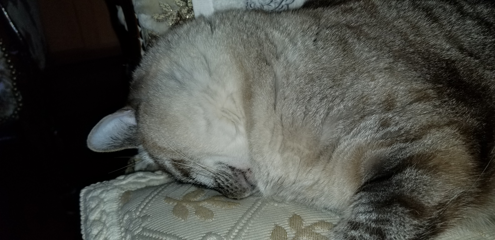

Class 1 Lab
Welcome to Code Fellows, 201d65, you are awesome!
This is a paragraph tag, it can contain a bunch of text. See more text
Kitty Question
Do you like Blaze or MewMew?
What is your favorite thing about them?
Why do you love cats so much?
Do you love Dogs too?
- MewMew: 
- Blaze: